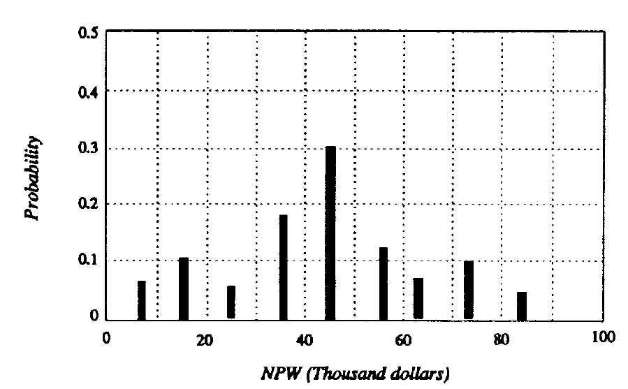

← Back to Index
Example 66 (Slide 214)
-
The
NPWs
and
their
joint
probabilities in previous table and
its NPW distribution are depicted in
Figure.
-
We observe that there is a 0.38
probability that the project would
realize
an
NPW
less
than
that
forecast for the base-case situation
($40,168).
-
On the other hand, there is a 0.32
probability that the NPW will be
greater than this value
214
Example
Discussion
